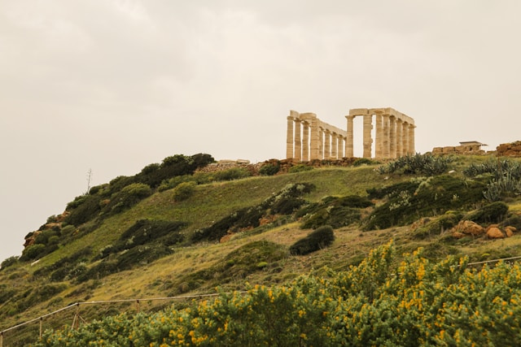

O mundo grego, ou Grécia Antiga, é uma civilização que floresceu na Península Balcânica e regiões circundantes, abrangendo desde o período micênico (c. 1600-1100 a.C.) até o período romano (146 a.C.), com um legado que influenciou a cultura ocidental. A Grécia Antiga é conhecida por seus avanços na filosofia, política, arte, ciência, tecnologia e arquitetura. Embora o território grego não tenha formado um império unificado como o romano, era composto por centenas de cidades-estado independentes, chamadas pólis, cada uma com seu próprio governo, leis, exército e costumes. Apesar disso, os gregos compartilhavam uma identidade comum baseada na língua, nos mitos religiosos, nas práticas culturais e nos jogos pan-helênicos, como os Jogos Olímpicos. A história da Grécia Antiga é tradicionalmente dividida em períodos. O mais antigo é o período micênico, entre aproximadamente 1600 e 1100 a.C., caracterizado por reinos fortificados e uma cultura guerreira retratada nos poemas épicos de Homero, como a Ilíada e a Odisseia. Após o colapso das civilizações palacianas, inicia-se a chamada Idade das Trevas, um tempo de instabilidade e desaparecimento da escrita. A partir de cerca de 800 a.C., no período conhecido como arcaico, ocorre um renascimento cultural e político: as cidades-estado ganham forma, surgem novas leis, práticas religiosas se consolidam e os gregos se lançam em intensas campanhas de colonização pelo Mediterrâneo.
O mundo grego era formado por centenas de cidades-estado independentes, chamadas póleis (singular: pólis), como:
